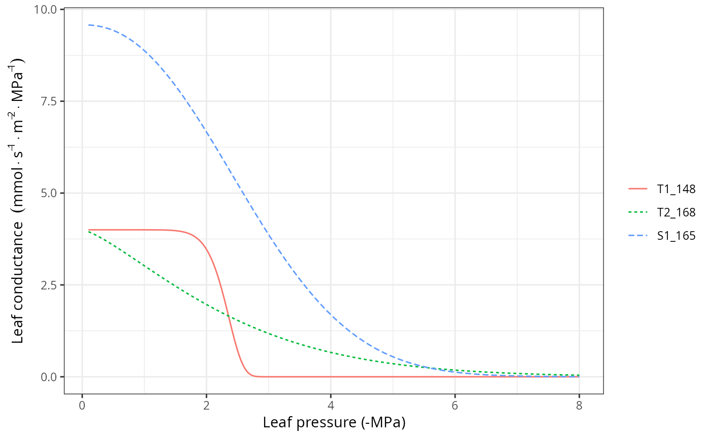
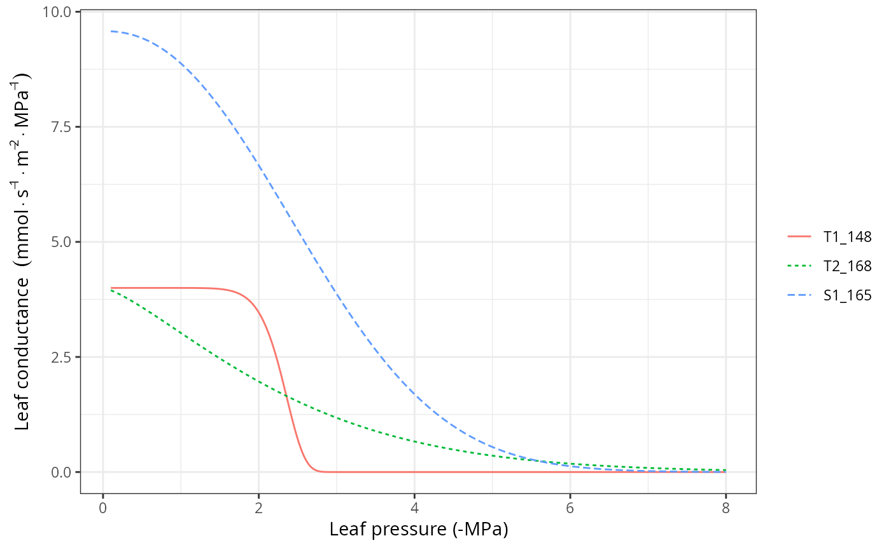

Hydraulic confuctance functions
Source:R/RcppExports.R, R/hydraulics_vulnerabilityCurvePlot.R
hydraulics_conductancefunctions.RdSet of functions used in the calculation of soil and plant hydraulic conductance.
Usage
hydraulics_psi2K(psi, psi_extract, exp_extract = 3)
hydraulics_K2Psi(K, psi_extract, exp_extract = 3)
hydraulics_averagePsi(psi, v, exp_extract, psi_extract)
hydraulics_xylemConductance(psi, kxylemmax, c, d)
hydraulics_xylemConductanceSigmoid(psi, kxylemmax, P50, slope)
hydraulics_xylemPsi(kxylem, kxylemmax, c, d)
hydraulics_psiCrit(c, d, pCrit = 0.001)
hydraulics_vanGenuchtenConductance(psi, krhizomax, n, alpha)
hydraulics_correctConductanceForViscosity(kxylem, temp)
hydraulics_psi2Weibull(psi50, psi88 = NA_real_, psi12 = NA_real_)
hydraulics_vulnerabilityCurvePlot(
x,
soil = NULL,
type = "leaf",
vulnerabilityFunction = "Weibull",
psiVec = seq(-0.1, -8, by = -0.01),
relative = FALSE,
speciesNames = FALSE,
draw = TRUE,
ylim = NULL,
xlab = NULL,
ylab = NULL
)Arguments
- psi
A scalar (or a vector, depending on the function) with water potential (in MPa).
- psi_extract
Soil water potential (in MPa) corresponding to 50% whole-plant relative transpiration.
- exp_extract
Exponent of the whole-plant relative transpiration Weibull function.
- K
Whole-plant relative conductance (0-1).
- v
Proportion of fine roots within each soil layer.
- kxylemmax
Maximum xylem hydraulic conductance (defined as flow per leaf surface unit and per pressure drop).
- c, d
Parameters of the Weibull function (generic xylem vulnerability curve).
- kxylem
Xylem hydraulic conductance (defined as flow per surface unit and per pressure drop).
- pCrit
Proportion of maximum conductance considered critical for hydraulic functioning.
- krhizomax
Maximum rhizosphere hydraulic conductance (defined as flow per leaf surface unit and per pressure drop).
- n, alpha
Parameters of the Van Genuchten function (rhizosphere vulnerability curve).
- temp
Temperature (in degrees Celsius).
- psi50, psi88, psi12
Water potentials (in MPa) corresponding to 50%, 88% and 12% percent conductance loss.
- x
An object of class
spwbInput.- soil
A list containing the description of the soil (see
soil).- type
Plot type for
hydraulics_vulnerabilityCurvePlot, either"leaf","stem","root"or"rhizosphere").- vulnerabilityFunction
String indicating the function used to represent vulnerability in plant segments, either "Weibull" or "Sigmoid".
- psiVec
Vector of water potential values to evaluate for the vulnerability curve.
- relative
A flag to relativize vulnerability curves to the [0-1] interval.
- speciesNames
A flag to indicate the use of species names instead of cohort names in plots.
- draw
A flag to indicate whether the vulnerability curve should be drawn or just returned.
- ylim, xlab, ylab
Graphical parameters to override function defaults.
Value
Values returned for each function are:
hydraulics_psi2K: Whole-plant relative conductance (0-1).hydraulics_K2Psi: Soil water potential (in MPa) corresponding to the given whole-plant relative conductance value (inverse ofhydraulics_psi2K()).hydraulics_averagePsi: The average water potential (in MPa) across soil layers.hydraulics_vanGenuchtenConductance: Rhizosphere conductance corresponding to an input water potential (soil vulnerability curve).hydraulics_xylemConductance: Xylem conductance (flow rate per pressure drop) corresponding to an input water potential (plant vulnerability curve).hydraulics_xylemPsi: Xylem water potential (in MPa) corresponding to an input xylem conductance (flow rate per pressure drop).hydraulics_psi2Weibull: Parameters of the Weibull vulnerability curve that goes through the supplied psi50 and psi88 values.
Details
Details of plant hydraulic models are given the medfate book.
Function hydraulics_vulnerabilityCurvePlot draws a plot of the vulnerability curves for the given soil object and network properties of each plant cohort in x.
References
Sperry, J. S., F. R. Adler, G. S. Campbell, and J. P. Comstock. 1998. Limitation of plant water use by rhizosphere and xylem conductance: results from a model. Plant, Cell and Environment 21:347–359.
Sperry, J. S., and D. M. Love. 2015. What plant hydraulics can tell us about responses to climate-change droughts. New Phytologist 207:14–27.
Examples
#Manual display of vulnerability curve
kstemmax = 4 # in mmol·m-2·s-1·MPa-1
stemc = 3
stemd = -4 # in MPa
psiVec = seq(-0.1, -7.0, by =-0.01)
kstem = unlist(lapply(psiVec, hydraulics_xylemConductance, kstemmax, stemc, stemd))
plot(-psiVec, kstem, type="l",ylab="Xylem conductance (mmol·m-2·s-1·MPa-1)",
xlab="Canopy pressure (-MPa)", lwd=1.5,ylim=c(0,kstemmax))
 #Load example dataset
data(exampleforest)
#Default species parameterization
data(SpParamsMED)
#Initialize soil with default soil params (4 layers)
examplesoil <- defaultSoilParams(4)
#Initialize control parameters
control <- defaultControl("Granier")
#Switch to 'Sperry' transpiration mode
control <- defaultControl("Sperry")
#Initialize input
x <- spwbInput(exampleforest,examplesoil, SpParamsMED, control)
#Leaf vulnerability curves
hydraulics_vulnerabilityCurvePlot(x, type="leaf")

#Stem vulnerability curves
hydraulics_vulnerabilityCurvePlot(x, type="stem")
#Load example dataset
data(exampleforest)
#Default species parameterization
data(SpParamsMED)
#Initialize soil with default soil params (4 layers)
examplesoil <- defaultSoilParams(4)
#Initialize control parameters
control <- defaultControl("Granier")
#Switch to 'Sperry' transpiration mode
control <- defaultControl("Sperry")
#Initialize input
x <- spwbInput(exampleforest,examplesoil, SpParamsMED, control)
#Leaf vulnerability curves
hydraulics_vulnerabilityCurvePlot(x, type="leaf")

#Stem vulnerability curves
hydraulics_vulnerabilityCurvePlot(x, type="stem")